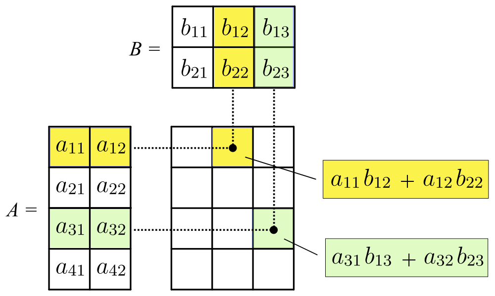

2.17. Matrix Multiplication ¶
Please refer the related section in textbook for the matrices, before reading this question.
Assume \(\mathbf{A}\) and \(\mathbf{B}\) are two matrices. If \(\mathbf{A}\) has dimensions \(m \mbox{(rows)} \times n \mbox{(columns)}\) and \(\mathbf{B}\) has dimensions \(n \mbox{(rows)} \times p \mbox{(columns)}\), then the product \(\mathbf{AB}\) is defined, and has dimensions \(m \mbox{(rows)}\times p \mbox{(columns)}\).
The entry \(\mathbf{(AB)}_{ij}\) is obtained by multiplying row \(i\) of \(\mathbf{A}\) by column \(j\) of \(\mathbf{B}\), which is done by multiplying corresponding entries together and then adding the results.

The figure above depicts an example operation of \(A \times B\).
You will practice matrix multiplication in this question. In python, we
can have list of lists and we can think of them as matrices. The
outermost list is holding the rows. So the first element is the first
row, the second is the second row, and so on. Each row is represented by
a list of its own. We can view this as the representation of a matrix.
This list of lists, if stored into a variable s, can be indexed (like
s[0][0], which will provide us the first item of the first list in
s). s[1][4], for example, will stand for the the matrix element at
the second row and the fifth column. Yes there is a clumsiness, list
indexing starts with zero, matrix indexing start with 1.
So, having a Pythonic representation for matrices, by implementing the matrix multiplication rule above, we can do a matrix multiplication operation among two given matrices, in Python.
Sample I/O:
Input:
[[12, 7, 3], [4, 5, 6], [7, 8, 9]]
[[5, 8, 1, 2], [6, 7, 3, 0], [4, 5, 9, 1]]
Output:
[[114, 160, 60, 27], [74, 97, 73, 14], [119, 157, 112, 23]]
Input:
[[1, 2], [2, 3]]
[[2, 2, 3], [4, 4 ,2]]
Output:
[[10, 10, 7], [16, 16, 12]]
Hint: In order to store correct values in the result matrix, you can create a two dimensional list full of 0’s by using list repetition.
matrix1 = eval(input())
matrix2 = eval(input())
# Do not change the lines above
first_dimension_matrix1 = len(matrix1)
second_dimension_matrix2 = len(matrix2[0])
mutual_dimension = len(matrix2) # or it could be len(matrix1[0])
new_generated_matrix = [0] * first_dimension_matrix1
for i in range(first_dimension_matrix1):
new_generated_matrix[i] = [0] * second_dimension_matrix2
for row in range(first_dimension_matrix1):
for column in range(second_dimension_matrix2):
for i in range(mutual_dimension):
new_generated_matrix[row][column] += matrix1[row][i] * matrix2[i][column]
print(new_generated_matrix)